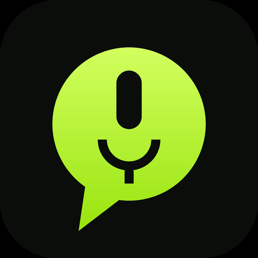

YapTrap for Android
The real one: a bubble that floats over every app — no split-screen needed.
- Tap Download the app below.
- Open the file. If Android asks, allow Install unknown apps for your browser, then Install.
- Open YapTrap → tap Permissions → allow the mic, and turn on Display over other apps.
- Tap Show bubble. Drag it anywhere — it snaps to the edge. Tap it to record or pause; the ••• nub opens Notes / Copy / Save / Close.
While it records, Android shows a permanent YapTrap notification — that's the system rule for background mics, and its Stop button (or Close in the bubble menu) kills everything and saves your note. Updates work the same way: download the new file, install over the top, your notes stay.
Download the app
YapTrap 1.0 · 63 KB · Android 10+ · free, no account, notes stay on your phone